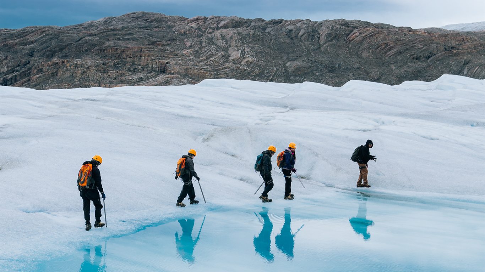
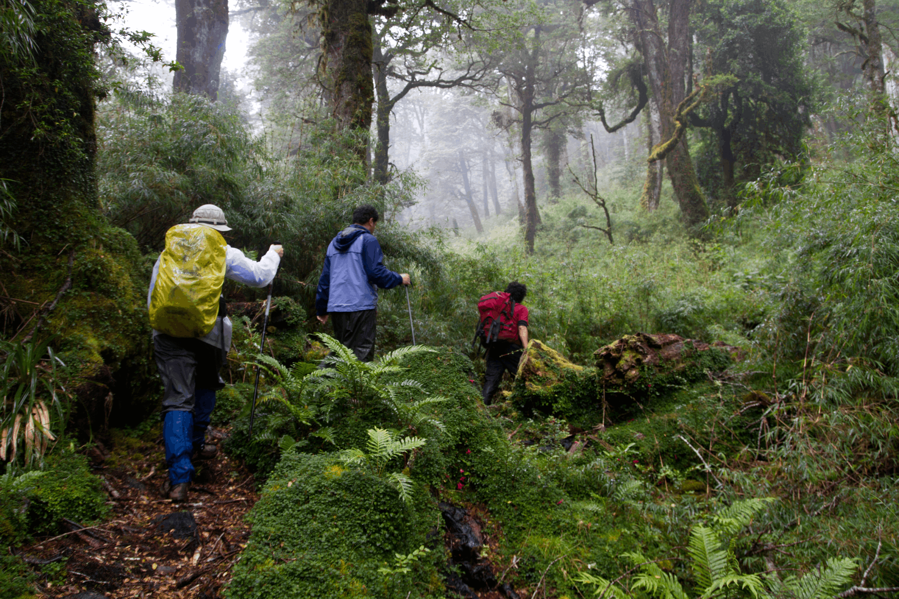
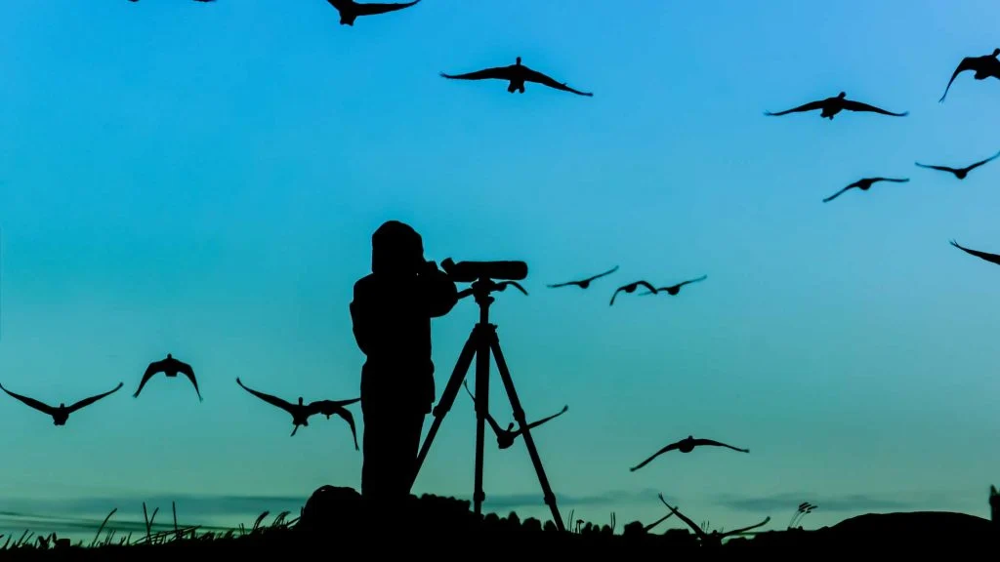
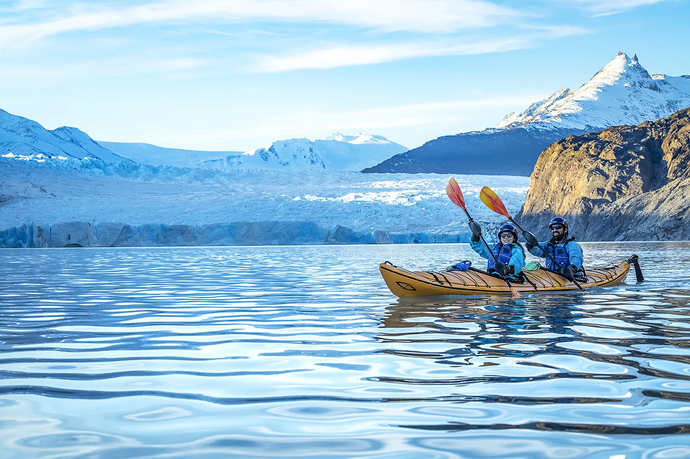
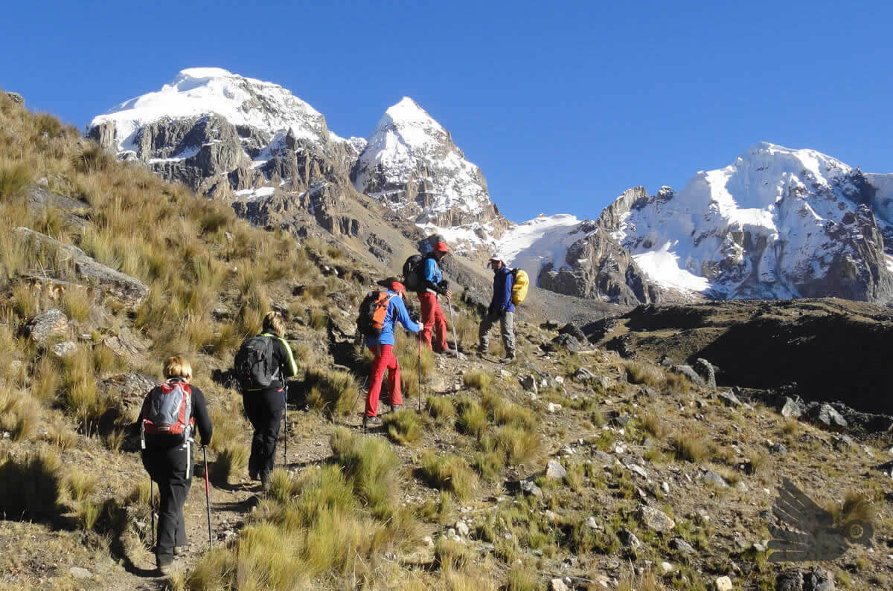
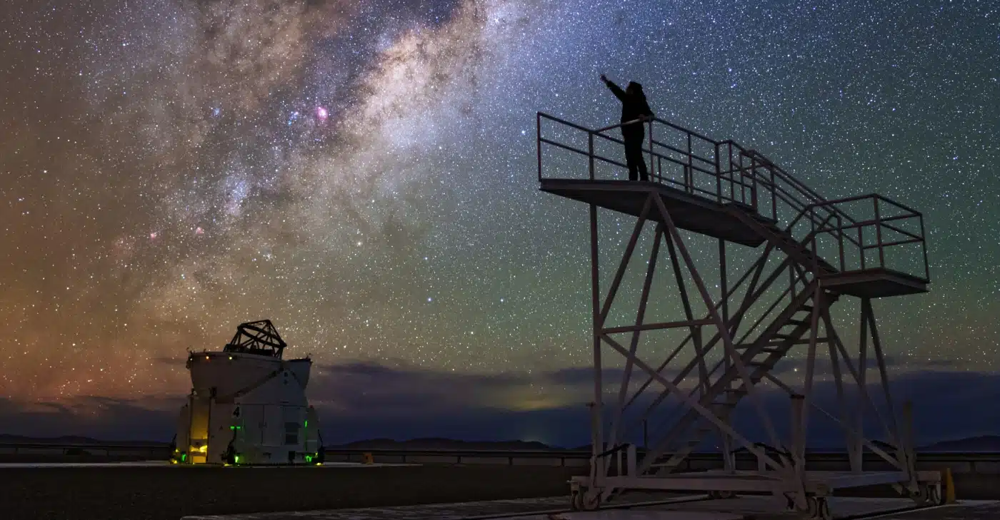

Actividades Imperdibles

Trekking al Glaciar Escondido
Una caminata de medidana dificultad para ver el asombroso glaciar escondido en las montañas.

Caminata en el Bosque
Disfruta de una caminata a través del bosque con un ambiente relajante.

Observación de Aves
Descubre una variedad de especies de aves en su habitad natural.

Paseo en el Lago
Disfruta de la tranquilidad del lago mientras navegas en kayak.

Senderismo a lo Alto
Senderismo guiado de gran dificultad a lo más alto de la cordillera.

Observación de Estrellas
Disfruta de un cielo estrellado sin contaminación lumínica.